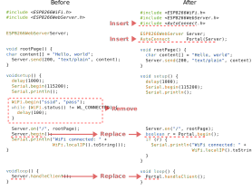

Basic usage
Simple usage¶
Embed to the Sketches¶
How embed the AutoConnect to the Sketches you have. Most simple approach to applying AutoConnect for the existing Sketches, follow the below steps. The below Sketch is for ESP8266. For ESP32, replace ESP8266WebServer with WebServer and ESP8266WiFi.h with WiFi.h respectively.

Insert #include <AutoConnect.h> to behind of #include <ESP8266WebServer.h>.
Insert AutoConnect PORTAL(WEBSERVER); to behind of ESP8266WebServer WEBSERVER; declaration.1
Remove WiFi.begin(SSID,PSK) and the subsequent logic for the connection status check.
Replace WEBSERVER.begin() to PORTAL.begin().2
Replace WEBSERVER.handleClient() to PORTAL.handleClient().3
If the connection checks logic is needed, you can check the return value according to PORTAL.begin() with true or false.
Basic usage¶
Basic logic sequence for the user Sketches¶
1. A typical logic sequence¶
- Include headers,
ESP8266WebServer.h/WebServer.handAutoConnect.h - Declare an ESP8266WebServer variable for ESP8266 or a WebServer variable for ESP32.
- Declare an AutoConnect variable.
- Implement the URL handlers provided for the
onmethod of ESP8266WebServer/WebServer with the function(). - setup()
5.1 Sets URL handler the function() to ESP8266WebServer/WebServer byESP8266WebServer::on/WebServer::on.
5.2 StartsAutoConnect::begin().
5.3 Check WiFi connection status. - loop()
6.1 Do the process for actual Sketch.
6.2 InvokesAutoConnect::handleClient(), or invokesESP8266WebServer::handleClient()/WebServer::handleClientthenAutoConnect::handleRequest().
2. Declare AutoConnect object¶
Two options are available for AutoConnect constructor.
AutoConnect VARIABLE(&ESP8266WebServer); // For ESP8266
AutoConnect VARIABLE(&WebServer); // For ESP32
AutoConnect VARIABLE;
-
The parameter with an ESP8266WebServer/WebServer variable: An ESP8266WebServer/WebServer object variable must be declared. AutoConnect uses its variable to handles the AutoConnect menu.
-
With no parameter: the Sketch does not declare ESP8266WebServer/WebServer object. In this case, AutoConnect allocates an instance of the ESP8266WebServer/WebServer internally. The logic sequence of the Sketch is somewhat different as the above. To register a URL handler function by ESP8266WebServer::on or WebServer::on should be performed after AutoConnect::begin.
3. No need WiFI.begin(...)¶
AutoConnect internally performs WiFi.begin to establish a WiFi connection. There is no need for a general process to establish a connection using WiFi.begin with a Sketch code.
4. Alternate ESP8266WebServer::begin() and WebServer::begin()¶
AutoConnect::begin executes ESP8266WebServer::begin/WebServer::begin internally too and it starts the DNS server to behave as a Captive portal. So it is not needed to call ESP8266WebServer::begin/WebServer::begin in the Sketch.
Why DNS Server starts
AutoConnect traps the detection of the captive portal and achieves a connection with the WLAN interactively by the AutoConnect menu. It responds SoftAP address to all DNS queries temporarily to trap. Once a WiFi connection establishes, the DNS server contributed by AutoConnect stops.
5. AutoConnect::begin with SSID and Password¶
SSID and Password can also specify by AutoConnect::begin. ESP8266/ESP32 uses provided SSID and Password explicitly. If the connection false with specified SSID with Password then a captive portal is activated. SSID and Password are not present, ESP8266 SDK will attempt to connect using the still effectual SSID and password. Usually, it succeeds.
6. Use ESP8266WebServer::on and WebServer::on to handle URL¶
AutoConnect is designed to coexist with the process for handling the web pages by user Sketches. The page processing function which will send an HTML to the client invoked by the "on::ESP8266WebServer" or the "on::WebServer" function is the same as when using ESP8266WebServer/WebServer natively.
7. Use either ESP8266WebServer::handleClient()/WebServer::handleClient() or AutoConnect::handleClient()¶
Both classes member function name is the same: handleClient, but the behavior is different. Using the AutoConnect embedded along with ESP8266WebServer::handleClient/WebServer::handleClient has limitations. Refer to the below section for details.
ESP8266WebServer/WebServer hosted or parasitic¶
The interoperable process with an ESP8266WebServer/WebServer depends on the parameters of the AutoConnect constructor.
| Declaration parameter for the constructor | Use ESP8266WebServer::handleClient or WebServer::handleClient only | Use AutoConnect::handleClient |
|---|---|---|
| None | AutoConnect menu not available. To use AutoConnect menu, need AutoConnect::handleRequest(). also to use ESP8266WebServer/WebServer natively, need AutoConnect::host(). |
AutoConnect menu available. To use ESP8266WebServer/WebServer natively, need AutoConnect::host(). |
| Reference to ESP8266WebServer/WebServer | AutoConnect menu not available. To use AutoConnect menu, need AutoConnect::handleRequest(). |
AutoConnect menu available. |
-
By declaration for the AutoConnect variable with no parameter: The ESP8266WebServer/WebServer instance is hosted by AutoConnect automatically then the Sketches use AutoConnect::host as API to get it after AutoConnect::begin performed.
-
By declaration for the AutoConnect variable with the reference of ESP8266WebServer/WebServer: AutoConnect will use it. the Sketch can use it is too.
-
In use ESP8266WebServer::handleClient()/WebServer::handleClient(): AutoConnect menu can be dispatched but not works normally. It is necessary to call AutoConnect::handleRequest after ESP8255WebServer::handleClient/WebServer::handleClient invoking.
-
In use AutoConnect::handleClient(): The handleClient() process and the AutoConnect menu is available without calling ESP8266WebServer::handleClient.
Why AutoConnect::handleRequest is needed when using ESP8266WebServer::handleClient/WebServer::handleClient
The AutoConnect menu function may affect WiFi connection state. It follows that the menu process must execute outside ESP8266WebServer::handleClient and WebServer::handleClient.
AutoConnect::handleClient is equivalent ESP8266WebServer::handleClient and WEbServer::handleClient included AutoConnect::handleRequest.
-
Each VARIABLE conforms to the actual declaration in the Sketches. ↩
-
WiFi SSID and Password can be specified AutoConnect::begin() too. ↩
-
Replacement the handleClient method is not indispensable. AutoConnect can still connect with the captive portal as it is ESP8266WebServer::handleClient. But it can not valid AutoConnect menu. ↩